El Mejor Corte de Barberia, Con las mejores tecnicas Modernas y Experiencias en los Mejores Desvanecidos.

El Barbero empieza a desvanecer la barba, una vez logrado esto prepara el jabón y espuma para después ponerla sobre la barba con ayuda de una brocha. Toma una toalla caliente y cubre tu rosto o utiliza un vaporizador. Básicamente lo que busca el Barbero con este paso es que se ablande la barba y así después retira la toalla o el vaporizador, empieza a retirar todos los vellos que están fuera del diseño de tu barba con su navaja. Una vez ya terminado este paso, pone un after shave sobre la piel y luego cubre el rostro con una toalla fría y deja reposar un par de minutos, logrando así cerrar los poros y eliminar alguna sensación de irritación y enrojecimiento de la piel, para terminar ponen un tónico para después del afeitado con la finalidad de nutrir la piel y la barba.

Es el afeitado de Barbero tradicional, el que se hace a cuchilla o navaja clásica. En este afeitado clásico suministramos calor para abrir el poro de la piel en tu barba primero, luego ponemos la crema de afeitar con brocha de tejón, y afeitamos con navaja de Barbero en una primera pasada a favor del pelo, otra pasada luego a contrapelo tras dar espuma de nuevo, y una tercera pasada para apurar bien poniendo luego paños de agua fría, y por supuesto una loción para después del afeitado que calme la piel mientras se hace un masaje para reactivar la circulación. Y todo ello de la manera más clásica y tradicional que de siempre se ha realizado en las barberías.